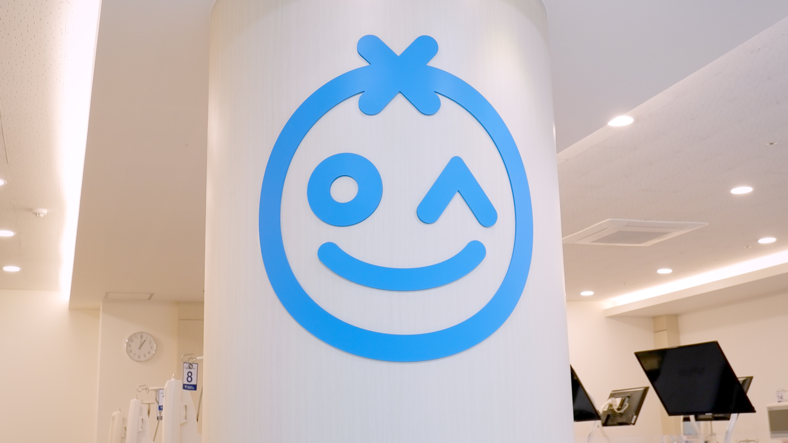

두 가지 강점이 한 병원에
저희 병원은 크게 두 가지 역할을 합니다. 하나는 신장내과 전문의가 직접 운영하는 인공신장실입니다. 투석 환자분들에게 안전하고 전문적인 의료서비스를 제공하는 것이 저희의 첫 번째 사명입니다.
다른 하나는 신장의료진으로 구성된 외래진료와 건강검진입니다. 단순한 진료를 넘어, 처음 만난 날부터 오랜 시간 건강을 함께 관리하는 '프리미엄 주치의'가 되고자 합니다.
투석 환자분이든, 건강검진을 받으러 오신 분이든, 만성질환을 관리하러 오신 분이든 — 정을식내과의원은 여러분의 건강을 진심으로 책임집니다.

투석은 단순히 기계를 연결하는 것이 아닙니다. 신장내과 전문의가 처방하고, 지켜보고, 조율해야 하는 정밀한 의료 행위입니다. 정을식내과의원은 신장내과 전문의 2인이 직접 모든 투석 과정을 관리합니다.
정을식·김미정 원장, 두 명의 전문의가 모든 투석 환자를 직접 진료합니다
Fresenius 5008S, 6008S, Nipro NCU-18. 신뢰받는 투석 장비를 사용합니다
감염 위험 환자를 위한 별도 격리실로 모든 환자의 안전을 지킵니다
긴 투석 시간을 편안하게. 각 침대마다 전용 TV를 설치했습니다
건강검진은 장비로 정밀하게. 만성질환은 전문의가 꾸준히. 급성 질환은 신속하게. 정을식내과의원 외래진료의 세 가지 약속입니다.
후지 ELUXEO 6000 내시경, 삼성메디슨 초음파, Xenoray MX-600 유방촬영기. 장비로 건강의 작은 이상도 놓치지 않겠습니다. 검진 후 주치의와 당일 결과 상담이 가능합니다.
의료진이 만성질환(고혈압·당뇨·고지혈증·갑상선 등)을 장기적으로 관리합니다. 처음 방문부터 건강 파트너로 함께합니다.
감기, 장염 같은 급성 질환부터 소화기, 호흡기, 신장 질환까지. 네 명의 의료진이 각자의 영역에서 자신 있게 진료합니다.
국내 주요 대학병원들과 진료협력 체계를 구축하고 있습니다.
필요 시 신속한 전원·협진으로 환자분께 맞춤 치료를 연결합니다.